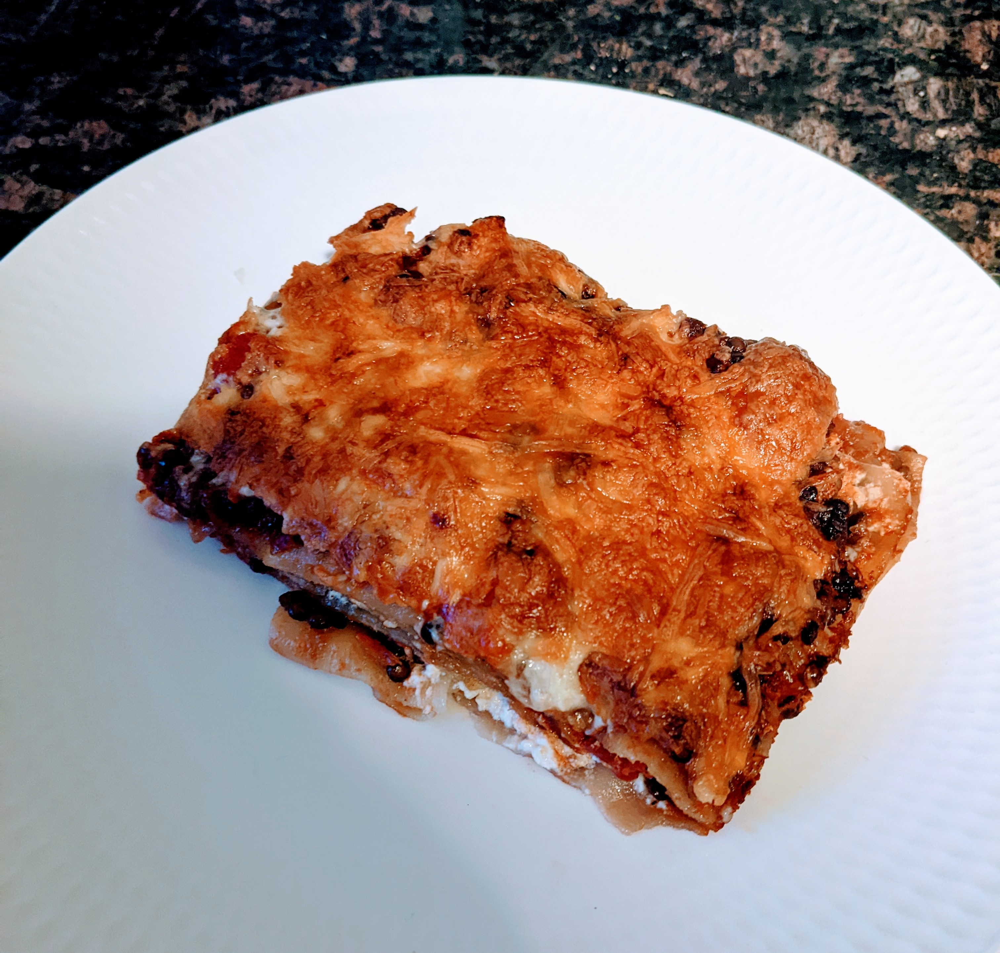

storage
Seb
expand_more
Rezepte
Lasagne
Suppe
Linsendip
Github
My Repository
Lasagne

Zutaten
2
Möhren
1
Zwiebeln
1/2 Tasse
Berglinsen
Streukäse
1EL
Tomatenmark
2
Tomaten Dose (gestückelt)
Halbe Packung
Lasagneblätter
1
Crème fraîche
Salz
Pfeffer
Paprika
1
Sojasoße
Zubereitung
Schritt 1: Vorbereitung der Linsen
Koche Wasser ab.
Gieße eine halbe Tasse Linsen mit dem heißen Wasser auf und lasse sie quellen.
Schritt 2: Das Gemüse vorbereiten
Während die Linsen vor sich hin quellen, schneide die Zwiebeln und Möhren in feine Stücke.
In einer großen Pfanne, schwitze die geschnittenen Zwiebeln und Möhren zusammen mit dem Tomatenmark an, bis sie eine duftende Mischung ergeben.
Schritt 3: Linsen und Tomatensoße
Gieße die gequollenen Linsen in ein Sieb und spüle sie kurz ab, bevor du sie zu den angebratenen Zwiebeln und Möhren in der Pfanne gibst.
Füge die beiden Dosen Tomatenmark hinzu und spüle die Dosen jeweils zur Hälfte mit kochendem Wasser aus. Gieße das Wasser ebenfalls in die Pfanne.
Lasse die Mischung auf mittlerer Hitze köcheln und entfalte dabei den vollen Geschmack.
Schritt 4: Würzen und Verfeinern
Würze die Soße nach Belieben mit Salz und anderen Gewürzen, um den Geschmack abzurunden.
Für eine besondere Note kannst du einen Schuss Sojasoße hinzufügen, um die Aromen zu intensivieren.
Schritt 5: Den Aufbau der Lasagne
Schalte die Pfanne aus und bereite eine Auflaufform vor.
Beginne mit einer dünnen Schicht der Tomatensoße am Boden der Auflaufform.
Bestreiche eine Lasagneplatte mit der Soße und lege sie über die Soßenschicht in der Form.
Schritt 6: Schicht für Schicht
Nun kommt der kreative Teil: Wechsle zwischen Soßenschichten und Lasagneplatten, bis die Auflaufform schön gefüllt ist.
Du kannst die Schichten nach Lust und Laune variieren, um deine persönliche Note hinzuzufügen.
Schritt 7: Der finale Touch
Streue großzügig Käse über die oberste Schicht der Lasagne, um eine goldene Kruste zu schaffen.
Schritt 8: Ab in den Ofen
Heize den Ofen auf 200 Grad Umluft vor.
Stelle die gefüllte Auflaufform für etwa 30 Minuten in den vorgeheizten Ofen.